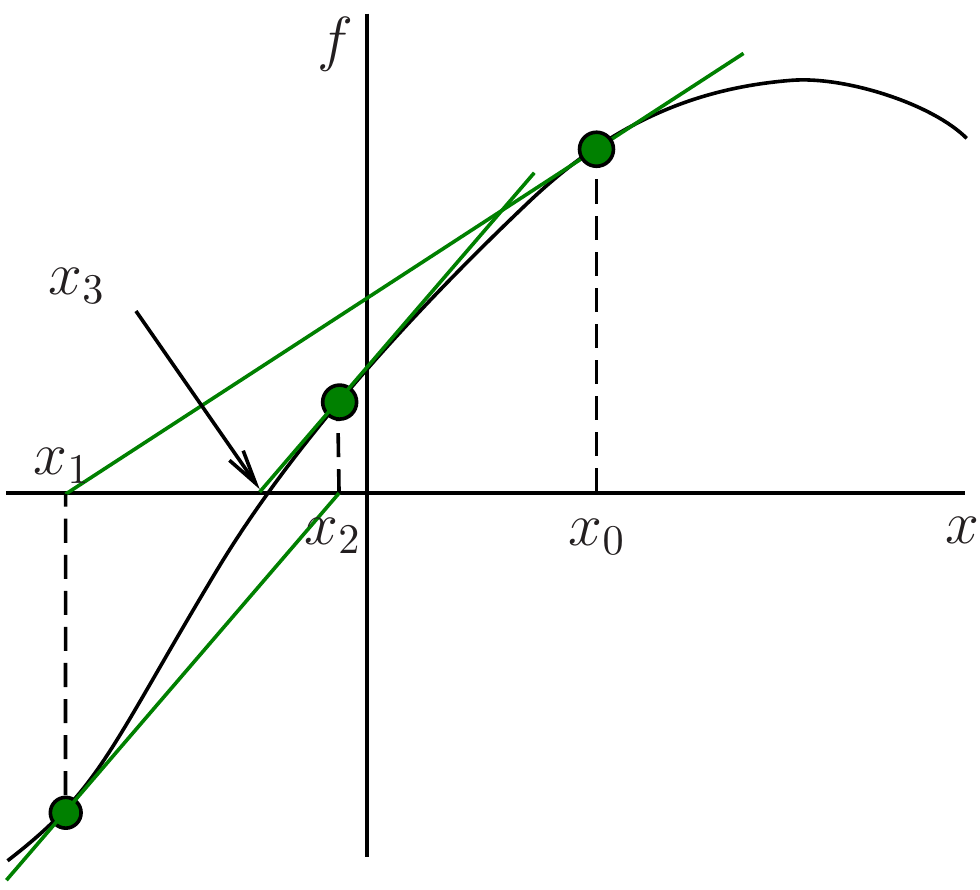
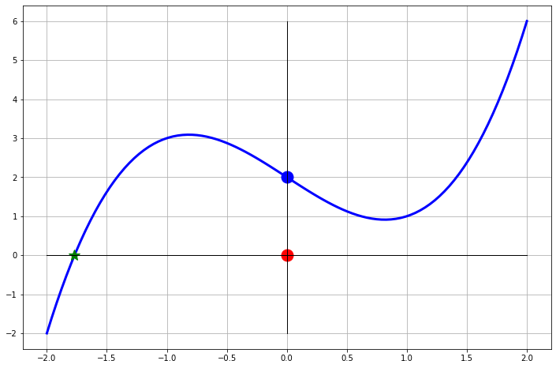
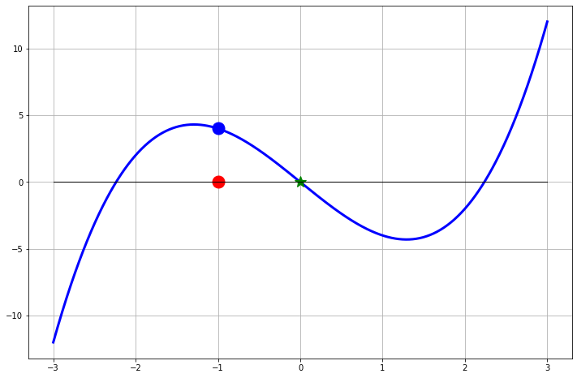
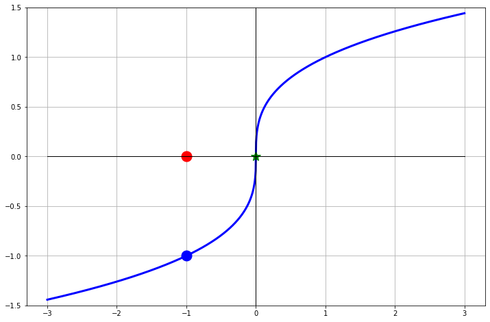
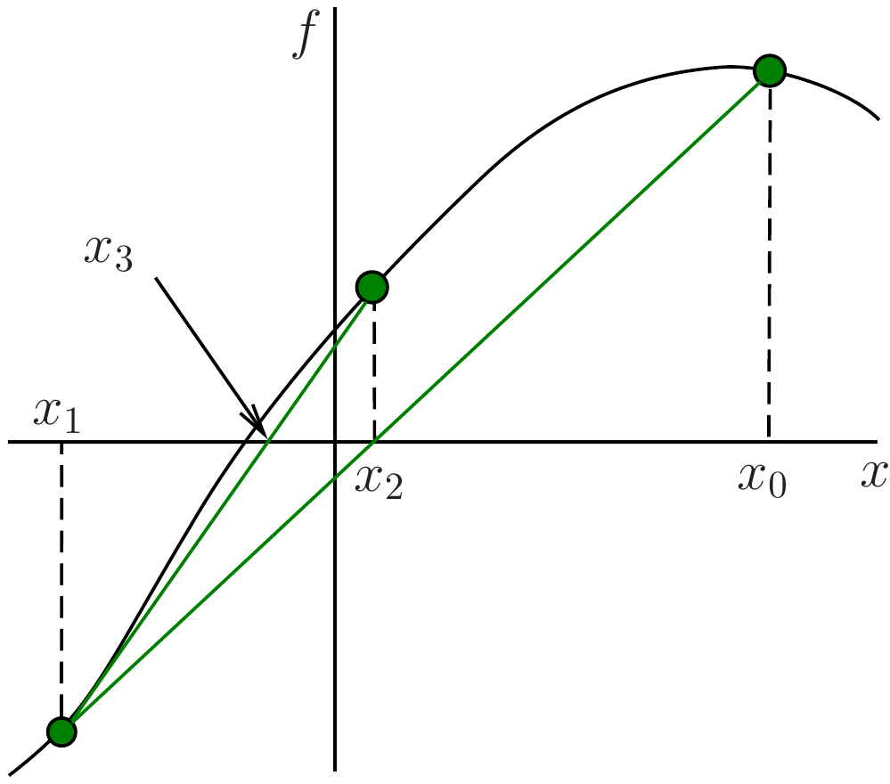
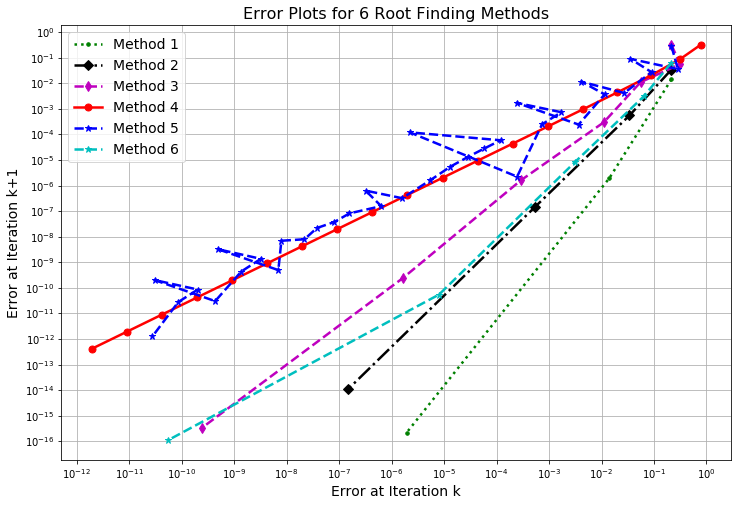
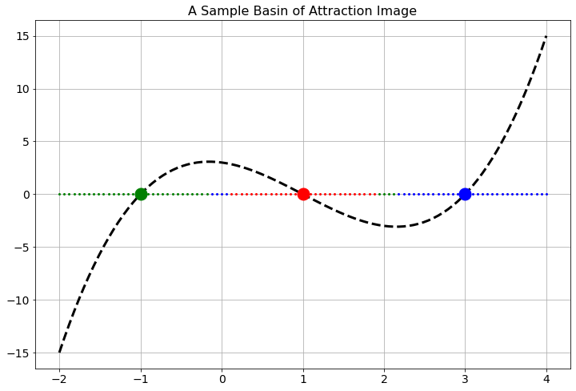

4 Roots 2
This week we will continue our study of root-finding methods. We will start with Newton’s method, then move on to the secant method and finally discuss the theory behind the order of convergence of these methods.
4.1 Newton’s Method
In the bisection method (Section 3.2) we used only the sign of the function at the guessed points. We will now investigate how we can also use the value and the slope (derivative) of the function to get a much improved method.
4.1.1 Intuition
Root finding is really the process of finding the \(x\)-intercept of the function. If the function is complicated (e.g. highly nonlinear or does not lend itself to traditional by-hand techniques) then we can approximate the \(x\)-intercept by creating a Taylor series approximation of the function at a nearby point and then finding the \(x\)-intercept of that simpler Taylor series. The simplest non-trivial Taylor series is a linear function: a tangent line.
Exercise 4.1 🖋 A tangent line approximation to a function \(f(x)\) near a point \(x_0\) is \[ y = f(x_0) + f'(x_0) \left( x - x_0 \right). \] Set \(y\) to zero and solve for \(x\) to find the \(x\)-intercept of the tangent line. \[ \text{$x$-intercept of tangent line is } x = \underline{\hspace{0.5in}} \]
The idea of approximating the function by its tangent line gives us an algorithm for approximating the root of a function:
Given a value of \(x\) that is a decent approximation of the root, draw a tangent line to \(f(x)\) at that point.
Find where the tangent line intersects the \(x\)-axis.
Use this intersection as the new \(x\) value and repeat.
The first step has been shown for you in Figure 4.1. The tangent line to the function \(f(x)\) at the point \((x_0, f(x_0))\) is shown in red. The \(x\)-intercept of the tangent line is the new \(x\) value, \(x_1\). The process is then repeated with \(x_1\) as the new \(x_0\) and so on.

The graphical method illustrated in Figure 4.1 was introduced by Sir Isaac Newton and is therefore known as Newton’s method. Joseph Raphson then gave the algebraic formulation and popularised the method, which is therefore also known as the Newton-Raphson method.
Exercise 4.2 💬 If we had started not at \(x_0\) in Figure 4.1 but instead at the very end of the \(x\)-axis in that figure, what would have happened? Would this initial guess have worked to eventually approximate the root?
Exercise 4.3 🖋 💬 Sketch some other function \(f(x)\) with a root and choose an initial point \(x_0\) and graphically perform the Newton iteration a few times, similar to Figure 4.1. Does the algorithm appear to converge to the root in your example? Do you think that this will generally take more or fewer steps than the bisection method?
Exercise 4.4 🖋 🎓 Consider the function \(f(x)=\sin(x)+1\). It has roots at \(x=2n\pi+3\pi/2\) for \(n\in\mathbb{Z}.\) However, at the roots we have \(f'(x)=0\). Make yourself a sketch to see why. What will happen when you apply Newton’s method with a starting value of \(x_0=\pi\)? You should be able to answer this just by looking at the sketch.
Exercise 4.5 🖋 Using your result from Exercise 4.1, write the formula for the \(x\)-intercept of the tangent line to \(f(x)\) at the point \((x_n, f(x_n))\). This is the formula for the next guess \(x_{n+1}\) in Newton’s method. Newton’s method is a fixed-point iteration method of the form \(x_{n+1} = g(x_{n})\) with \[ g(x)= \dots. \] Fill in the blank in the above formula.
Exercise 4.6 🖋 💻 🎓 Apply Newton’s method to find the root of the function \(f(x) = x^2 - 2\) with an initial guess of \(x_0=1\). Calculate the first two iterations of the sequence by hand (you do not need a calculator or computer for this). Use a calculator or computer to calculate the next two iterations and fill in the following table:
| \(n\) | \(x_n\) | \(f(x_n)\) | \(f'(x_n)\) |
|---|---|---|---|
| \(0\) | \(x_0 = 1\) | \(f(x_0) = -1\) | \(f'(x_0) = 2\) |
| \(1\) | \(x_1 = 1 - \frac{-1}{2} = \frac{3}{2}\) | \(f(x_1) =\) | \(f'(x_1) =\) |
| \(2\) | \(x_2 =\) | \(f(x_2) =\) | \(f'(x_2) =\) |
| \(3\) | \(x_3 =\) | \(f(x_3) =\) | \(f'(x_3) =\) |
| \(4\) | \(x_4 =\) |
4.1.2 Implementation
Exercise 4.7 💻 The following is an outline of a Python function called newton() for Newton’s method. Complete the function definition by copying your code from your fixed_point_iteration() function and modifying it to implement Newton’s method.
def newton(f, fprime, x0, tol=1e-10, N=30):
"""
Find a root of f(x) using Newton's method.
Parameters:
f (function): Function whose root we want to find
fprime (function): Derivative of f
x0 (float): Initial guess for the root
tol (float, optional): Error tolerance. Defaults to 1e-10
N (int, optional): Maximum number of iterations. Defaults to 30.
Returns:
float: Approximate root of f(x) if convergence is achieved within N iterations
"""
# Copy your code from your `fixed_point_iteration()` function and modify it to implement Newton's method.Exercise 4.8 💻 🎓 Use your implementation from Exercise 4.7 to approximate the root of the function \(f(x) = x^2 - 2\) with an initial guess of \(x_0=1\). Use a tolerance of \(10^{-10}\).
4.1.3 Failures
There are several ways in which Newton’s method will behave unexpectedly, or downright fail. Some of these issues can be foreseen by examining the Newton iteration formula \[ x_{n+1} = x_n - \frac{f(x_n)}{f'(x_n)}. \] Some of the failures that we will see are a little more surprising.
Exercise 4.9 💻 One of the failures of Newton’s method is that it requires a division by \(f'(x_n)\). If \(f'(x_n)\) is zero then the algorithm completely fails. Go back to your Python function and put an if statement in the function that catches instances when Newton’s method fails in this way.
Exercise 4.10 🖋 An interesting failure can occur with Newton’s method that you might not initially expect. Consider the function \(f(x) = x^3 - 2x + 2\). This function has a root near \(x=-1.77\). Fill in the table below with pen and paper. You really do not need a computer for this. Then draw the tangent lines into Figure 4.2 for approximating the solution to \(f(x) = 0\) with a starting point of \(x=0\).
| \(n\) | \(x_n\) | \(f(x_n)\) | \(f'(x_n)\) |
|---|---|---|---|
| \(0\) | \(x_0 = 0\) | \(f(x_0) = 2\) | \(f'(x_0) = -2\) |
| \(1\) | \(x_1 = 0 - \frac{f(x_0)}{f'(x_0)} = 1\) | \(f(x_1) = 1\) | \(f'(x_1) = 1\) |
| \(2\) | \(x_2 = 1 - \frac{f(x_1)}{f'(x_1)} =\) | \(f(x_2) =\) | \(f'(x_2) =\) |
| \(3\) | \(x_3 =\) | \(f(x_3) =\) | \(f'(x_3) =\) |
| \(4\) | \(x_4 =\) | \(f(x_4) =\) | \(f'(x_4) =\) |
| \(\vdots\) | \(\vdots\) | \(\vdots\) | \(\vdots\) |

Exercise 4.11 🖋 Repeat the previous exercise with the function \(f(x) = x^3 - 5x\) with the starting point \(x_0 = -1\). Again this is easy to do with pen and paper.

Exercise 4.12 🖋 Now let us consider the function \(f(x) = \sqrt[3]{x}\). This function has a root \(x=0\). Furthermore, it is differentiable everywhere except at \(x=0\) since \[ f'(x) = \frac{1}{3} x^{-2/3} = \frac{1}{3x^{2/3}}. \] The point of this exercise is to show what can happen when the point of non-differentiability is precisely the point that you are looking for.
- Fill in the table of iterations starting at \(x=-1\), draw the tangent lines on the plot, and make a general observation of what is happening with the Newton iterations.
| \(n\) | \(x_n\) | \(f(x_n)\) | \(f'(x_n)\) |
|---|---|---|---|
| \(0\) | \(x_0 = -1\) | \(f(x_0) = -1\) | \(f'(x_0) =\) |
| \(1\) | \(x_1 = -1 - \frac{f(-1)}{f'(-1)} =\) | \(f(x_1) =\) | \(f'(x_1) =\) |
| \(2\) | |||
| \(3\) | |||
| \(4\) | |||
| \(\vdots\) | \(\vdots\) | \(\vdots\) | \(\vdots\) |

Now let us look at the Newton iteration in a bit more detail. Since \(f(x) = x^{1/3}\) and \(f'(x) = \frac{1}{3} x^{-2/3}\) the Newton iteration can be simplified as \[ x_{n+1} = x_n - \frac{x_n^{1/3}}{ \left( \frac{1}{3} x_n^{-2/3} \right)} = x_n - 3 \frac{x_n^{1/3}}{x_n^{-2/3}} = x_n - 3x_n = -2x_n. \] What does this tell us about the Newton iterations?
Hint: You should have found the exact same thing in the numerical experiment in part 1.Was there anything special about the starting point \(x_0=-1\)? Will this problem exist for every starting point?
Exercise 4.13 💬 You have now seen several reasons why Newton’s method could fail. Work with your group to come up with a list of reasons. Support each of your reasons with a sketch or an example.
4.1.4 Rate of Convergence
In this section we will look at the convergence rate of Newton’s method and we will show that we can greatly outperform the bisection method.
We saw in Example 3.2 how we could empirically determine the rate of convergence of the bisection method by plotting the error in the new iterate on the \(y\)-axis and the error in the old iterate on the \(x\)-axis of a log-log plot. Take a look at that example again and make sure you understand the code and the explanation of the plot. Then, to investigate the rate of convergence of Newton’s method you can do the same thing.
Exercise 4.14 💻 🎓 Write a Python function newton_with_error_tracking() that returns a list of absolute errors between the iterates and the exact solution. You can start with your code from newton() from Exercise 4.7 and add the collection of the errors in a list as in the bisection_with_error_tracking() function that we wrote in Example 3.1. Your new function should accept a Python function for \(f(x)\), a Python function for \(f'(x)\), the exact root, an initial guess, an optional error tolerance and an optional maximum number of iterations.
Then, use this function to list the error progression for Newton’s method for finding the root of \(f(x) = x^2 - 2\) with the initial guess \(x_0 = 1\) and tolerance \(10^{-10}\). You should find that the error goes down extremely quickly and that for the final iteration Python can no longer detect a difference between the new iterate and its own value for \(\sqrt{2}\).
Exercise 4.15
💻 Plot the errors you calculated in Exercise 4.14 using the
plot_error_progression()function that we wrote in Example 3.2. Note that you will first need to remove the zeros from the error list, otherwise you will get an error. You can remind yourself of how to work with lists in Section A.2.2.💬 Give a thorough explanation for how to interpret the plot that you just made.
Exercise 4.16 💻 🎓 You will have observed that the points in your log-log plot lie approximately on a straight line, i.e., \[
\log(\epsilon_{n+1}) \approx m \log(\epsilon_n) + b
\] Extract the slope \(m\) and intercept \(b\) of the line that you fitted to the log-log plot of the error progression using the np.polyfit function.
🖋 Convert this into a statement about the ratio between \(\epsilon_{n+1}\) and \(\epsilon_n\), \[ \epsilon_{n+1} \approx \ ??? \left( \epsilon_n \right)^{???} \]
Exercise 4.17 💻 Reproduce plots like those in the previous example but for the function \[ f(x)=e^{x-3}+\sqrt{x+6}-4 \] that you used in Exercise 3.15 with the initial guess \(x_0=1\) and tolerance \(10^{-10}\). Again check that the plots have the expected shape. What is the approximate relationship between \(\epsilon_{n+1}\) and \(\epsilon_n\) in this case?
4.2 The Secant Method
4.2.1 Intuition and Implementation
Newton’s method has second-order (quadratic) convergence and, as such, will perform faster than the bisection method. However, Newton’s method requires that you have a function and a derivative of that function. The conundrum here is that sometimes the derivative is cumbersome or impossible to obtain but you still want to have the great quadratic convergence exhibited by Newton’s method.
Recall that Newton’s method is \[ x_{n+1} = x_n - \frac{f(x_n)}{f'(x_n)}. \] If we replace \(f'(x_n)\) with an approximation of the derivative then we may have a method that is close to Newton’s method in terms of convergence rate but is less troublesome to compute. Any method that replaces the derivative in Newton’s method with an approximation is called a quasi-Newton method.
The first, and most obvious, way to approximate the derivative is just to use the slope of a secant line instead of the slope of the tangent line in the Newton iteration. If we choose two starting points that are quite close to each other then the slope of the secant line through those points will be approximately the same as the slope of the tangent line.

Exercise 4.18 🖋 Use the backward difference \[ f'(x_n) \approx \frac{f(x_n) - f(x_{n-1})}{x_n - x_{n-1}} \] to approximate the derivative of \(f\) at \(x_n\). Discuss why this approximates the derivative. Use this approximation of \(f'(x_n)\) in the expression for \(x_{n+1}\) of Newton’s method. Show that the result simplifies to \[ x_{n+1} = x_n - \frac{f(x_n)\left( x_n - x_{n-1} \right)}{f(x_n) - f(x_{n-1})}. \]
Exercise 4.19 🖋 Notice that the iteration formula for \(x_{n+1}\) that you derived depends on both \(x_n\) and \(x_{n-1}\). So to start the iteration you need to choose two points \(x_0\) and \(x_1\) before you can calculate \(x_2, x_3, \dots\). Draw several pictures showing what the secant method does pictorially. Discuss whether it is important to choose these starting points close to the root and close to each other.
Exercise 4.20 💻 🎓 Write a Python function for solving equations of the form \(f(x) = 0\) with the secant method. Your function should accept a Python function, two starting points, and an optional error tolerance. Also write a test script that clearly shows that your code is working.
4.2.2 Analysis
Up to this point we have done analysis work on the bisection method and Newton’s method. We have found that the methods are first order and second order respectively. We end this chapter by doing the same for the secant method.
Exercise 4.21 💻 Write a function secant_with_error_tracking() that returns a list of absolute errors between the iterates and the exact solution. You can start with your code from secant() from Exercise 4.20 and add the collection of the errors in a list as in the bisection_with_error_tracking() function from Example 3.1. Your new function should accept a Python function, the exact root, two starting points, and an optional error tolerance.
Use this function to list the error progression for the secant method for finding the root of \(f(x) = x^2 - 2\) with the starting points \(x_0 = 1\) and \(x_1 = 3\). Use a tolerance of \(10^{-10}\). Use the plot_error_progression() function that we wrote in Example 3.2 to plot the error progression.
Exercise 4.22 💻 🎓 Using the np.polyfit function, extract the slope of the line that you had fit to the log-log plot of the error progression in Exercise 4.21. What does this slope tell you about how the error at each iteration is related to the error at the previous iteration?
Exercise 4.23 💻 Make error progression plots for a few different functions and look at the slopes. What do you notice?
4.3 Order of Convergence
You will by now have noticed that Newton’s method converges much faster than the bisection method. The secant method also converges faster than the bisection method, though not quite as fast as Newton’s method. You will have observed that reflected in the different slopes of the error progression graphs. In this section we summarize your observations theoretically. Thus this section is untypical in that it does not contain further explorations for you to do but instead just consolidates what you have already done. In class this will be presented as a lecture.
4.3.1 Definition
Definition 4.1 Suppose that \(x_{n}\to p\) as \(n\to\infty\) and \(x_n\neq p\) for all \(n\). The sequence \(\{x_{n}\}\) is said to have order of convergence \(\alpha \ge 1\) if there exists a constant \(\lambda >0\) such that \[ \lim_{n\to\infty}\frac{E_{n+1}}{E_{n}^{\alpha}}=\lambda . \tag{4.1}\] Here \(E_n\) denotes the absolute error in the \(n\)th approximation: \(E_{n}=\vert x_{n}-p\vert\).
If \(\alpha=1,2,3,\dots\), the convergence is said to be linear, quadratic, cubic, \(\dots\), respectively. Note that if the convergence is linear, then the positive constant \(\lambda\) that appears in the above definition must be smaller than 1 (\(0<\lambda<1\)), because otherwise the sequence will not converge.
A sequence with a higher order of convergence converges much more rapidly than a sequence with a lower order of convergence. To see this, let us consider the following example:
Example 4.1 Let \(\{x_{n}\}\) and \(\{y_{n}\}\) be sequences converging to zero and let, for \(n\geq 0\), \[ \vert x_{n+1}\vert = k \vert x_{n}\vert \quad \text{ and } \quad \vert y_{n+1}\vert = k \vert y_{n}\vert^{2}, \tag{4.2}\] where \(0< k < 1\). According to the definition, \(\{x_{n}\}\) is linearly convergent and \(\{y_{n}\}\) is quadratically convergent.
Also, we have \[ \begin{split} \vert x_{n}\vert&=k\vert x_{n-1}\vert= k^{2}\vert x_{n-2}\vert=\cdots=k^{n}\vert x_{0}\vert ,\\ \vert y_{n}\vert&=k\vert y_{n-1}\vert^{2}= k(k\vert y_{n-2}\vert^{2})^{2}=k^{3}\vert y_{n-2}\vert^{4}= k^{7}\vert y_{n-3}\vert^{8}=\cdots =k^{2^{n}-1}\vert y_{0}\vert^{2^{n}}. \end{split} \tag{4.3}\] This illustrates that quadratic convergence is much faster than linear convergence.
We have defined the order of convergence of a converging sequence. We will also say that an iterative method has order of convergence \(\alpha\) if the sequence of approximations that it produces on a generic problem has order of convergence \(\alpha\).
4.3.2 Fixed Point Iteration
Suppose that \(g(x)\) satisfies the conditions of the Fixed Point Theorem on the interval \([a,b]\), so that the sequence \(\{x_{n}\}\) generated by the formula \(x_{n+1}=g(x_{n})\) with \(x_{0}\in [a,b]\) converges to a fixed point \(p\). Then, using the Mean Value Theorem, we obtain \[ \begin{split} E_{n+1}&=\vert x_{n+1}-p\vert=\vert g(x_{n})-g(p)\vert\\ &=\vert g'(\xi_n)( x_{n}-p)\vert = E_{n}\vert g'(\xi_{n})\vert, \end{split} \tag{4.4}\] where \(\xi_{n}\) is a number between \(x_n\) and \(p\). This implies that if \(x_n\to p\), then \(\xi_n\to p\) as \(n\to\infty\). Therefore, \[ \lim_{n\to\infty}\frac{E_{n+1}}{E_{n}}=\vert g'(p)\vert . \tag{4.5}\] In general, \(g'(p)\neq 0\), so that the fixed-point iteration produces a linearly convergent sequence.
Can the fixed-point iteration produce convergent sequences with convergence of order 2, 3, etc.? It turns out that, under certain conditions, this is possible.
We will prove the following
Theorem 4.1 Let \(m > 1\) be an integer, and let \(g\in C^{m}[a,b]\). Suppose that \(p\in [a,b]\) is a fixed point of \(g\), and suppose that there exists a point \(x_{0}\in [a,b]\) such that the sequence generated by the formula \(x_{n+1}=g(x_{n})\) converges to \(p\). If \(g'(p)=\dots =g^{(m-1)}(p)=0\), then \(\{x_{n}\}\) has the order of convergence \(m\).
Proof. Expanding \(g(x_{n})\) in a Taylor series at the point \(p\), we obtain: \[ \begin{split} x_{n+1}=g(x_{n}) &= g(p) + (x_{n}-p)g'(p)+\dots \\ &\qquad + \frac{(x_{n}-p)^{m -1}}{(m -1)!}g^{(m -1)}(p)\\ &\qquad + \frac{(x_{n}-p)^{m}}{m!}g^{(m)}(\xi_n) \\ &=p+\frac{(x_{n}-p)^{m}}{(m)!}g^{(m)}(\xi_n), \end{split} \tag{4.6}\] where \(\xi_n\) is between \(x_{n}\) and \(p\) and, therefore, in \([a,b]\) (\(x_{n}\in[a,b]\) at least for sufficiently large \(n\)). Then we have \[ \begin{split} E_{n+1}&=\vert x_{n+1}-p\vert=\vert g(x_{n})-p\vert= \left\vert\frac{(x_{n}-p)^{m}}{(m)!}g^{(m)}(\xi_n)\right\vert\\ &= E_{n}^m \frac{\vert g^{(m)}(\xi_n)\vert}{m!}. \end{split} \tag{4.7}\] Therefore (using the fact that \(\xi_n\to p\)), \[ \lim_{n\to\infty}\frac{E_{n+1}}{E_{n}^m}= \frac{\vert g^{(m)}(p)\vert}{m!} , \tag{4.8}\] which means that \(\{x_{n}\}\) has convergence of order \(m\).
4.3.3 Newton’s Method
Newton’s method for approximating the root \(p\) of the equation \(f(x)=0\) is equivalent to the fixed-point iteration \(x_{n+1}=g(x_{n})\) with \[ g(x)=x-\frac{f(x)}{f'(x)}. \tag{4.9}\] Suppose that the sequence \(\{x_{n}\}\) converges to \(p\) and \(f'(p)\neq 0\). We have \[ g'(x)=\frac{f(x)f''(x)}{f'(x)^2} \quad \Rightarrow \quad g'(p)=\frac{f(p)f''(p)}{f'(p)^2}=0 . \tag{4.10}\] It follows from the above theorem that the order of convergence of Newton’s method is at least 2. We also have \[ g''(x)=\frac{f'(x)f''(x)+f(x)f'''(x)}{f'(x)^2} - \frac{2f(x)f''(x)^2}{f'(x)^3} \] and hence, again using that \(f(p)=0\), we find \[ g''(p)=\frac{f''(p)}{f'(p)}\neq 0 \qquad\text{if } f''(p)\neq 0. \tag{4.11}\] If \(f''(p)=0\), then \(g''(p)=0\) and the order of convergence is at least 3.
4.3.4 Secant Method
The situation with the secant method is more complicated (since it cannot be reduced to a fixed-point iteration) and requires a separate treatment. The result is that the secant method has order of convergence \(\alpha=\frac{1+\sqrt{5}}{2}\approx 1.618\).
Note that \(\alpha\) is known as the golden ratio. If you are intrigued to see the golden ratio appear in this context, you can find a proof below. If you are happy to just accept the result, you can skip the proof.
Suppose that a sequence \(\{x_{n}\}\), generated by the secant method \[ x_{n+1}=x_{n}- \frac{f(x_{n})(x_{n}-x_{n-1})}{f(x_{n})-f(x_{n-1})}, \tag{4.12}\] converges to \(p\). Let \[ e_{n}=x_{n}-p, \tag{4.13}\] so that \(E_n=\vert e_n\vert\), and we assume that \(E_n \ll 1\), which is definitely true for sufficiently large \(n\) (since the sequence \(\{x_n\}\) is converging to \(p\)). Subtracting \(p\) from both sides of Eq. 4.12, we obtain \[ e_{n+1}=e_{n}- \frac{f(p+e_{n})(e_{n}-e_{n-1})}{f(p+e_{n})-f(p+e_{n-1})}, \tag{4.14}\] Expanding \(f(p+e_{n})\) and \(f(p+e_{n-1})\) in Taylor series about \(p\) and taking into account that \(f(p)=0\), we find that \[ \begin{split} f(p+e_{n})&=e_{n}f^{\prime}(p)+ \frac{e_{n}^{2}}{2}f^{\prime\prime}(p)+ \cdots \\ &=e_{n}f^{\prime}(p)(1+e_{n}Q)+ \cdots,\\ f(p+e_{n-1})&=e_{n-1}f^{\prime}(p)+ \frac{e_{n-1}^{2}}{2}f^{\prime\prime}(p)+ \cdots \\ &=e_{n-1}f^{\prime}(p)(1+e_{n-1}Q)+ \cdots, \end{split} \tag{4.15}\] where \[ Q=\frac{f^{\prime\prime}(p)}{2f^{\prime}(p)}. \tag{4.16}\] Substitution of Eq. 4.15 into Eq. 4.14 yields \[ \begin{split} e_{n+1}&=e_{n}- \frac{e_{n}(e_{n}-e_{n-1})f^{\prime}(p)(1+e_{n}Q)+\cdots}{f^{\prime}(p) \left[e_{n}-e_{n-1}+Q(e_{n}^2-e_{n-1}^2)+\cdots\right]} \\ &=e_{n}\left(1-\frac{1+e_{n}Q+\cdots}{1+Q(e_{n}+e_{n-1})+\cdots}\right). \end{split} \tag{4.17}\] Since, for small \(x\), \[ \frac{1}{1+x+\cdots}= 1-x+\cdots , \tag{4.18}\] we obtain \[ \begin{split} e_{n+1}&=e_{n}\left(1-\left(1+e_{n}Q+\cdots\right)\left(1-Q(e_{n}+e_{n-1})+\cdots\right)\right)\\ &=Q e_{n}e_{n-1}+\cdots. \end{split} \tag{4.19}\] Thus, for sufficiently large \(n\), we have \[ e_{n+1} \approx Q e_{n}e_{n-1}. \tag{4.20}\] Hence, \[ E_{n+1} \approx \vert Q\vert \, E_{n}E_{n-1}. \tag{4.21}\] Now we assume that (for all sufficiently large \(n\)) \[ E_{n+1} \approx \lambda E_{n}^{\alpha}, \tag{4.22}\] where \(\lambda\) and \(\alpha\) are positive constants. Substituting Eq. 4.22 into Eq. 4.21, we find \[ \lambda E_{n}^{\alpha} \approx \vert Q\vert E_{n}E_{n-1} \quad \text{ or } \quad \lambda E_{n}^{\alpha-1} \approx \vert Q\vert E_{n-1}. \tag{4.23}\] Applying Eq. 4.22 one more time (with \(n\) replaced by \(n-1\)), we obtain \[ \lambda \left(\lambda E_{n-1}^{\alpha}\right)^{\alpha-1} \approx \vert Q\vert E_{n-1} \tag{4.24}\] or, equivalently, \[ \lambda^{\alpha} E_{n-1}^{\alpha(\alpha-1)} \approx \vert Q\vert E_{n-1}. \tag{4.25}\] The last equation will be satisfied provided that \[ \lambda^{\alpha}=\vert Q\vert, \quad \alpha(\alpha-1)=1 , \tag{4.26}\] which requires that \[ \lambda=\vert Q\vert^{1/\alpha}, \quad \alpha=(1+\sqrt{5})/2\approx 1.62. \tag{4.27}\] Thus, we have shown that if \(\{x_{n}\}\) is a convergent sequence generated by the secant method, then \[ \lim_{n\to\infty}\frac{E_{n+1}}{E_{n}^{\alpha}}=\vert Q\vert^{1/\alpha}. \tag{4.28}\] Thus, the secant method has superlinear convergence.
Further reading: Section 2.4 of (Burden and Faires 2010).
4.4 Exam-Style Question
Briefly explain how the secant method modifies Newton’s method. Give one advantage and one disadvantage of the secant method compared to Newton’s method. [3 marks]
Define what it means for a sequence \(\{x_n\}\) converging to \(p\) to have an order of convergence \(\alpha \ge 1\). State the order of convergence for the bisection method, the secant method, and Newton’s method. [4 marks]
Consider finding the root of \(f(x) = x^2 - 5\).
- Apply Newton’s method with an initial guess \(x_0 = 2\) to find the next approximation \(x_1\). [2 marks]
- Apply the secant method with initial guesses \(x_0 = 3\) and \(x_1 = 2\) to find the next approximation \(x_2\). [2 marks]
Suppose a root-finding method produces a sequence \(\{x_n\}\) with quadratic convergence, and the errors \(E_n = |x_n - p|\) satisfy \(E_{n+1} \approx E_n^2\). If the current error is \(E_2 = 10^{-3}\), roughly what is the expected error \(E_4\)? [1 mark]
Show that if \(p\) is a simple root of \(f(x)\) (that is, \(f(p) = 0\) and \(f'(p) \neq 0\)) and \(f(x)\) is sufficiently smooth, Newton’s method has an order of convergence of at least \(\alpha=2\). You may use the theorem on the order of convergence for fixed-point iteration. [4 marks]
4.5 Problems
Exercise 4.24 Can the bisection method or Newton’s method be used to find the roots of the function \(f(x) = \cos(x) + 1\)? Explain why or why not for each technique. What is the rate of convergence? Be careful here, the answer is surprising.
Exercise 4.25 How many iterations of the bisection method are necessary to approximate \(\sqrt{3}\) to within \(10^{-3}\), \(10^{-4}\), \(\ldots\), \(10^{-15}\) using the initial interval \([a,b]=[0,2]\)? See Theorem 3.2.
Exercise 4.26 Refer back to Example 3.1 and demonstrate that you get the same results for the order of convergence when solving the problem \(x^3 - 3 = 0\). Generate versions of all of the plots from that example and give thorough descriptions of what you learn from each plot.
Exercise 4.27 In this problem you will demonstrate that all of your root-finding code works. At the beginning of this chapter we proposed the equation-solving problem \[ 3\sin(x) + 9 = x^2 - \cos(x). \] Write a script that calls upon your bisection, Newton, and secant methods one at a time to find the positive solution to this equation. Your script needs to output the solutions in a clear and readable way so you can tell which answer came from which root-finding algorithm.
Exercise 4.28 In Figure 4.6 you see six different log-log plots of the new error against the old error for different root-finding techniques. What is the order of the approximate convergence rate for each of these methods?

- In your own words, what does it mean for a root-finding method to have a “first-order convergence rate?” “Second-order convergence rate?” etc.
Exercise 4.29 There are many other root-finding techniques beyond the four that we have studied thus far. We can build these methods using Taylor series as follows:
Near \(x=x_0\) the function \(f(x)\) is approximated by the Taylor series \[ f(x) \approx y = f(x_0) + \sum_{n=1}^N \frac{f^{(n)}(x_0)}{n!} (x-x_0)^n \] where \(N\) is a positive integer. In a root-finding algorithm we set \(y\) to zero to find the root of the approximation function. The root of this function should be close to the actual root that we are looking for. Therefore, to find the next iterate we solve the equation \[ 0 = f(x_0) + \sum_{n=1}^N \frac{f^{(n)}(x_0)}{n!} (x-x_0)^n \] for \(x\). For example, if \(N=1\) then we need to solve \(0 = f(x_0) + f'(x_0)(x-x_0)\) for \(x\). In doing so we get \(x = x_0 - f(x_0)/f'(x_0)\). This is exactly Newton’s method. If \(N=2\) then we need to solve \[ 0 = f(x_0) + f'(x_0)(x-x_0) + \frac{f''(x_0)}{2!}(x-x_0)^2 \] for \(x\).
Solve for \(x\) in the case that \(N=2\). Then write a Python function that implements this root-finding method.
Demonstrate that your code from part (a) is indeed working by solving several problems where you know the exact solution.
Show several plots that estimate the order of the method from part (a). That is, create a log-log plot of the successive errors for several different equation-solving problems.
What are the pros and cons of using this new method?
Exercise 4.30 (modified from (Burden and Faires 2010)) An object falling vertically through the air is subject to friction due to air resistance as well as gravity. The function describing the position of such an object is \[ s(t) = s_0 - \frac{mg}{k} t + \frac{m^2 g}{k^2}\left( 1- e^{-kt/m} \right), \] where \(m\) is the mass measured in kg, \(g\) is gravity measured in metres per second squared, \(s_0\) is the initial position measured in metres, and \(k\) is the coefficient of air resistance.
What are the dimensions of the parameter \(k\)?
If \(m = 1\) kg, \(g = 9.8\) m/s\(^2\), \(k = 0.1\) kg/s, and \(s_0 = 100\) m, how long will it take for the object to hit the ground? Find your answer to within 0.01 seconds.
The value of \(k\) depends on the aerodynamics of the object and might be challenging to measure. We want to perform a sensitivity analysis on your answer to part (b) subject to small measurement errors in \(k\). If the value of \(k\) is only known to within 10% then what are your estimates of when the object will hit the ground?
Exercise 4.31 In Single Variable Calculus you studied methods for finding local and global extrema of functions. You likely recall that part of the process is to set the first derivative to zero and to solve for the independent variable (remind yourself why you are doing this). The trouble with this process is that it may be very challenging to solve by hand. This is a perfect place for Newton’s method or any other root-finding technique!
Find the local extrema for the function \(f(x) = x^3(x-3)(x-6)^4\) using numerical techniques where appropriate.
Exercise 4.32 (scipy.optimize.fsolve()) The scipy library in Python has many built-in numerical analysis routines much like the ones that we have built in this chapter. Of particular interest to the task of root finding is the fsolve command in the scipy.optimize library.
Go to the help documentation for
scipy.optimize.fsolveand make yourself familiar with how to use the tool.First solve the equation \(x\sin(x) - \log(x) = 0\) for \(x\) starting at \(x_0 = 3\).
Make a plot of the function on the domain \([0,5]\) so you can eyeball the root before using the tool.
Use the
scipy.optimize.fsolve()command to approximate the root.Fully explain each of the outputs from the
scipy.optimize.fsolve()command. You should use thefsolve()command withfull_output=1so you can see all of the solver diagnostics.
Demonstrate how to use
fsolve()using any non-trivial nonlinear equation solving problem. Demonstrate what some of the options offsolve()do.The
scipy.optimize.fsolve()command can also solve systems of equations (something we have not built algorithms for in this chapter). Consider the system of equations \[ \begin{split} x_0 \cos(x_1) &= 4 \\ x_0 x_1 - x_1 &= 5 \end{split} \] The following Python code allows you to usescipy.optimize.fsolve()to solve this system of nonlinear equations in much the same way as we did in part (b) of this problem. However, be aware that we need to think ofxas a vector of \(x\)-values. Go through the code below and be sure that you understand every line of code.
import numpy as np
from scipy.optimize import fsolve
def F(x):
return [x[0]*np.cos(x[1])-4, x[0]*x[1] - x[1] - 5]
fsolve(F, [6,1], full_output=1)
# Note: full_output=1 gives the solver diagnostics- Solve the system of nonlinear equations below using
fsolve(). \[ \begin{aligned} x^2-xy^2 &=2 \\ xy &= 2 \end{aligned} \]
4.6 Projects
At the end of every chapter we propose a few projects related to the content in the preceding chapter(s). In this section we propose two ideas for a project related to numerical algebra. The projects in this book are meant to be open ended, to encourage creative mathematics, to push your coding skills, and to require you to write and communicate your mathematics.
4.6.1 Basins of Attraction
Let \(f(x)\) be a differentiable function with several roots. Given a starting \(x\) value we should be able to apply Newton’s method to that starting point and we will converge to one of the roots (so long as you are not in one of the special cases discussed earlier in the chapter). It stands to reason that starting points near each other should all end up at the same root, and for some functions this is true. However, it is not true in general.
A basin of attraction for a root is the set of \(x\) values that converges to that root under Newton iterations. In this problem you will produce coloured plots showing the basins of attraction for all of the following functions. Do this as follows:
Find the actual roots of the function by hand (this should be easy on the functions below).
Assign each of the roots a different colour.
Pick a starting point on the \(x\)-axis and use it to start Newton’s method.
Colour the starting point according to the root that it converges to.
Repeat this process for many starting points so you get a coloured picture of the \(x\)-axis showing where the starting points converge to.
The set of points that are all the same colour are called the basin of attraction for the root associated with that colour. In Figure 4.7 there is an image of a sample basin of attraction image.

Create a basin of attraction image for the function \(f(x) = (x-4)(x+1)\).
Create a basin of attraction image for the function \(g(x) = (x-1)(x+3)\).
Create a basin of attraction image for the function \(h(x) = (x-4)(x-1)(x+3)\).
Find a non-trivial single-variable function of your own that has an interesting picture of the basins of attraction. In your write up explain why you thought that this was an interesting function in terms of the basins of attraction.
Now for the fun part! Consider the function \(f(z) = z^3 - 1\) where \(z\) is a complex variable. That is, \(z = x + iy\) where \(i = \sqrt{-1}\). From the Fundamental Theorem of Algebra we know that there are three roots to this polynomial in the complex plane. In fact, we know that the roots are \(z_0 = 1\), \(z_1 = \frac{1}{2}\left( -1 + \sqrt{3} i \right)\), and \(z_2 = \frac{1}{2} \left( -1 - \sqrt{3} i \right)\) (you should stop now and check that these three numbers are indeed roots of the polynomial \(f(z)\)). Your job is to build a picture of the basins of attraction for the three roots in the complex plane. This picture will naturally be two-dimensional since numbers in the complex plane are two dimensional (each has a real and an imaginary part). When you have your picture give a thorough write up of what you found.
Now pick your favourite complex-valued function and build a picture of the basins of attraction. Consider this an art project! See if you can come up with the prettiest basin of attraction picture.
4.6.2 Artillery
An artillery officer wishes to fire his cannon on an enemy brigade. He wants to know the angle to aim the cannon in order to strike the target. If we have control over the initial velocity of the cannon ball, \(v_0\), and the angle of the cannon above horizontal, \(\theta\), then the initial vertical component of the velocity of the ball is \(v_y(0) = v_0 \sin(\theta)\) and the initial horizontal component of the velocity of the ball is \(v_x(0) = v_0 \cos(\theta)\). In this problem we will assume the following:
We will neglect air resistance1 so, for all time, the differential equations \(v_y'(t) = -g\) and \(v_x'(t) = 0\) must both hold.
We will assume that the position of the cannon is the origin of a coordinate system so \(s_x(0) = 0\) and \(s_y(0) = 0\).
We will assume that the target is at position \((x_*,y_*)\) which you can measure accurately relative to the cannon’s position. The landscape is relatively flat but \(y_*\) could be a bit higher or a bit lower than the cannon’s position.
Use the given information to write a nonlinear equation2 that relates \(x_*\), \(y_*\), \(v_0\), \(g\), and \(\theta\). We know that \(g = 9.8\) m/s\(^2\) is constant and we will assume that the initial velocity can be adjusted between \(v_0 = 100\) m/s and \(v_0 = 150\) m/s in increments of \(10\) m/s. If we then are given a fixed value of \(x_*\) and \(y_*\) the only variable left to find in your equation is \(\theta\). A numerical root-finding technique can then be applied to your equation to approximate the angle. Create several lookup tables for the artillery officer so they can be given \(v_0\), \(x_*\), and \(y_*\) and then use your tables to look up the angle at which to set the cannon. Be sure to indicate when a target is out of range.
Write a brief technical report detailing your methods. Support your work with appropriate mathematics and plots. Include your tables at the end of your report.
Strictly speaking, neglecting air resistance is a poor assumption since a cannon ball moves fast enough that friction with the air plays a non-negligible role. However, the assumption of no air resistance greatly simplifies the maths and makes this version of the problem more tractable. The second version of the artillery problem in Chapter 7 will look at the effects of air resistance on the cannon ball.↩︎
Hint: Symbolically work out the amount of time that it takes until the vertical position of the cannon ball reaches \(y_*\). Then substitute that time into the horizontal position, and set the horizontal position equation to \(x_*\).↩︎